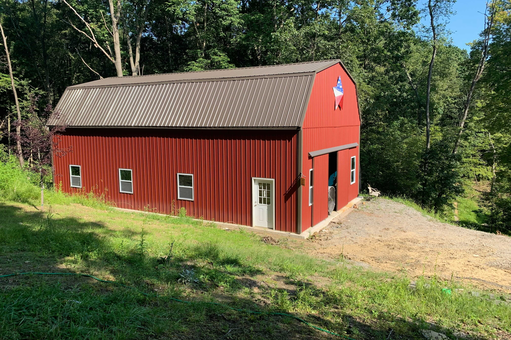

Storage Barn/Warehouse
Fall 2020-Spring 2021
3600sq ft of additional storage and shop space

The barn shown from the South.
We have a lot of equipment and machinery and a lot of it was currently stored outside, exposed (or at best, semi-exposed) to the elements. Lots of things were stuffed into our currently cramped storage buildings and shops, so we desperately needed more facilities to store equipment, machinery, and components. To deal with this, I designed two new buildings on our property. One is actually just a shelter for the sawmill, while the other is a sort of warehouse/barn for storage of pallets, crates, drums, and any other material that we don't want to store in our other locations.
Installing perlins with my brother
The barn was built similarly, but involved augering posts for the large columns and pouring a concrete foundation first. Columns were anchored, and the main longitudinal beams placed down. Trusses were constructed on the slab itself, for flatness, than lifted into place. Perlins were installed, and then we made the decision to hire a pair of Amish men to install the insulation, metal siding, and roof. They worked much faster than we could, and we needed that speed to get the building enclosed before it started to get really cold. Then we could begin the interior construction, installing floor joists for the third floor and mezzanine level, and building stairs.
The interior of the barn mid-construction